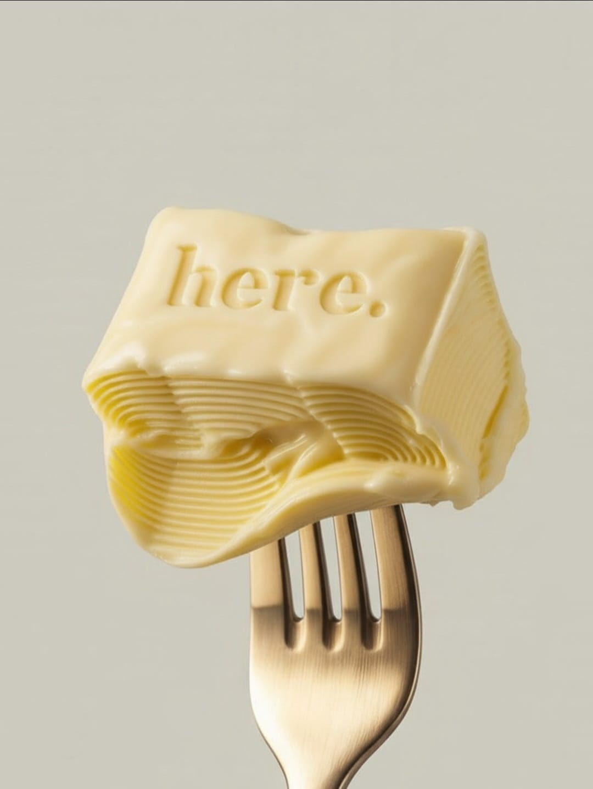
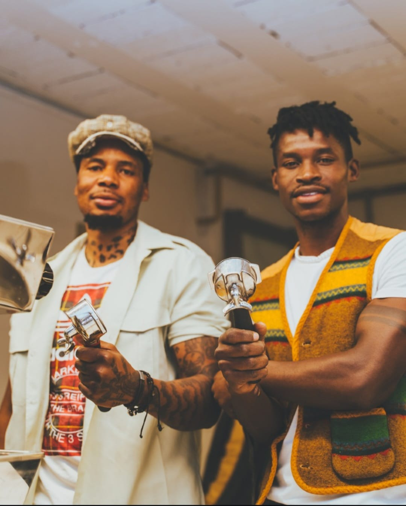
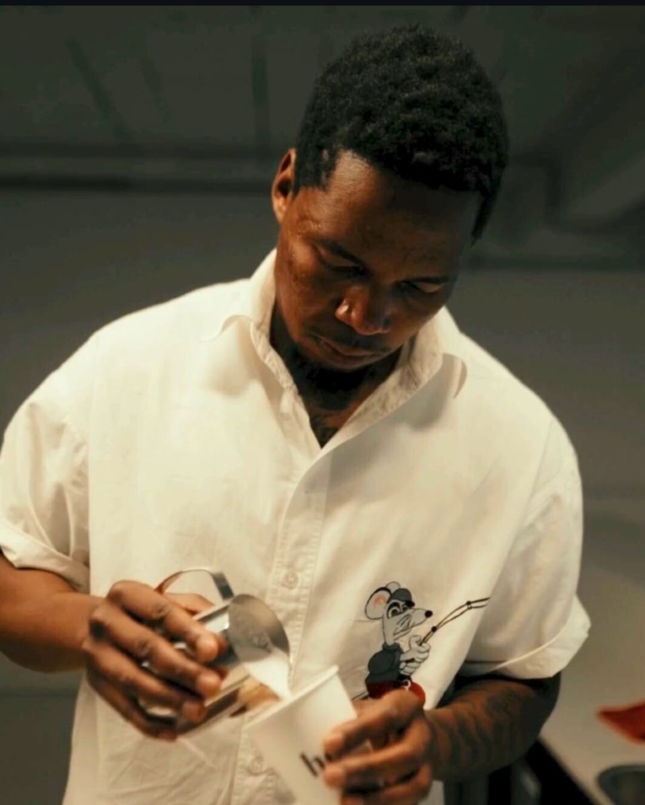

Our story
Established in 2025, here. is a beacon of warmth and creativity. instead of operating under a traditional
single-owner identity, here functions as a collaborative platform driven by several prominent creative partnerrs
and curators who brought the entire eco-system to life. With our mission to combine people from all spheres of
life through a shared love for good coffee. A reminder that you are not alone in your grind. everyone is grinding but
also willing to land an ear. all ages, all walks of life, all levels of creativity. A third space.
we collaborate with local artists, makers and coffee visionaries.
A shared canvas painted with deep connection, fueling a joyous community beyond home or the office.
it happens here.


Meet the visionaries behind your favourite coffee and matcha
Father coffee




founded in 2013 by Nicholas Christowitz, Barry Weedon, Angie Batis and Chad Goddard. It grew from a tiny concept to a massive influence on modern specialty coffee wave. South African Brista Champions 2024, now with a dedication to serve to you the best brew and matcha experience. Father coffeefunctions as bith a busy retail cafe and a serious wholesale roastery. Led by head roaster Chad Goddard, they source high-qualtiy beans globally from regions like Ethopia and Colombia.
Built for connection and collaboration:
- father coffee
- daily.
- linder the sigea
- Node Rosebank
Are you interested to work with us?
Get in touch